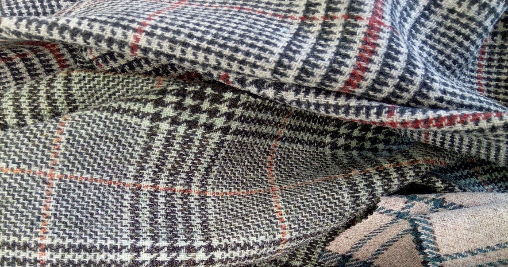

Nuestra línea de productos
Nuestros Productos
Telas de lana para la industria del vestido, tapicería para interiores y exteriores, tejidos técnicos, e hilos cardados y peinados.
13 familias de tela
Nuestra línea de productosNuestra línea01 / 04
Nuestra línea de productos
Producimos prácticamente todo tipo de telas de lana para la industria del vestido, tapicería para interiores y exteriores, tejidos técnicos, hilos cardados y peinados, así como mezclas especiales con algodón, poliéster, seda, cashmere, pelo de camello y diferentes materias sintéticas.
Además, nuestra producción abarca tejidos de lana tan ligeros como 130 g/m², hasta 600 g/m², todos fabricados bajo un sofisticado sistema de control de calidad.
- Tejido peinado, desde
- 130 g/m²
- Tejido cardado, hasta
- 600 g/m²
- Familias de producto
- 13
Fibras
Lana
Algodón
Lino
Seda
Cashmere
Pelo de camello
Poliéster
Viscosa
Nylon
Aramidas

Producimos prácticamente todo tipo de telas de lana.
Familias02 / 04
Familias de tela


Producción03 / 04
Producción


Contacto04 / 04
Novalan, S.A. de C.V.
Recepción de Muestras
Carr. Tulancingo-Huapalcalco #1510Col. Caltengo
Tulancingo, Hidalgo. México
C.P.: 43626
- Teléfonos
-
(52) 775-755-11-23
(52) 775-753-03-89 - Correo electrónico
- info@novalanfabrics.com.mx